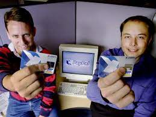

페이팔 홀딩스 주식회사(영어: PayPal Holdings, Inc.)는 온라인 송금을 지원하며 수표나 우편환같은 전통적 종이 방법에 대한 전자적인 대안의 역할을 제공하는 전 세계 온라인 지불 시스템을 운영하는 미국의 회사이다.
거래 상대방에게 자신의 은행 계좌번호나 신용카드 번호의 노출없이 클릭 한 번으로 송금 처리를 완료할 수 있는 서비스를 제공하며 일반적으로 송금받는 사람들에게는 일정한 소액 수수료를 청구하고 있다.
페이팔은 처음에 칸피니티(Confinity)라는 이름의 회사로 1998년에 설립되었고, 페이팔이라는 이름의 온라인 송금 서비스를 시작하였는데, 그전까지 개인수표나 우편환으로 대금을 결제하던 이베이의 사용자들은 거래 상대방의 이메일 주소로 빠르게 돈을 보낼 수 있을 뿐만 아니라 만일의 경우 구매 보호까지 받을 수 있는 페이팔을 점차 선호하게 되었다.
페이팔은 2002년에 기업공개를 하였으며 그 해에 이베이가 전적으로 소유하는 자회사가 되었다.
2014년 이베이는 2015년 중반까지 페이팔을 독립적인 회사로 분리할 계획을 발표하였으며, 분리는 2015년 7월 18일에 완료되었다.
2018년 이베이는 기존 이베이-페이팔 계약이 종료되는 2020년에 페이팔이 이베이의 구매자를 위한 지불 옵션으로 남아있기는 하지만 현재처럼 직불 카드 및 신용 카드 옵션보다 앞서서 두드러지게 기능하지는 않을 것이라고 발표하였다. 그 시점에서 페이팔은 이베이에 대한 신용카드 지불 처리를 중지할 것으로 알려졌다.
